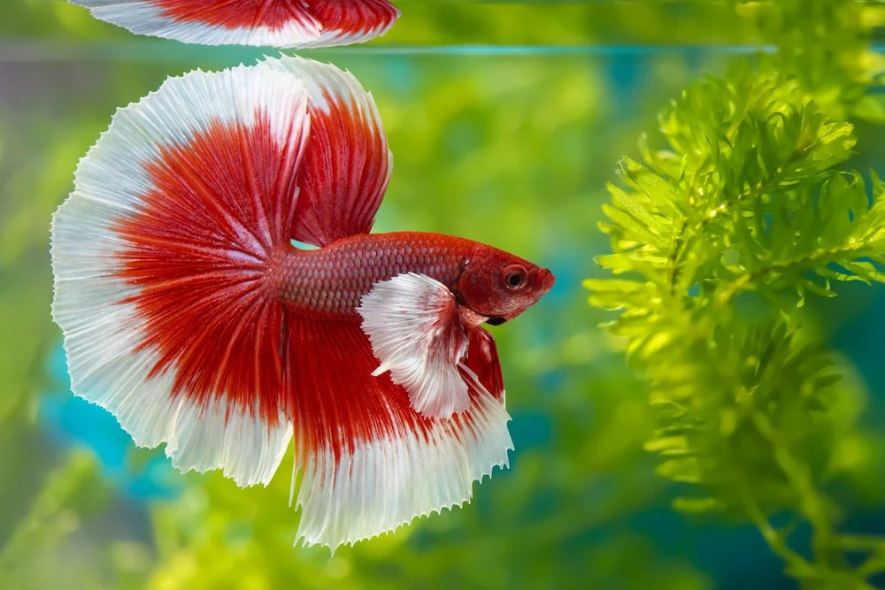

Getting Started
Fishkeeping can be a fun hobby, but setting up an aquarium correctly is important for keeping fish healthy. Before buying fish, you should choose the right tank size, filter, decorations, and water conditioner.
One of the biggest mistakes beginners make is adding too many fish too quickly. A new aquarium needs time to develop beneficial bacteria that help keep the water safe for fish.
Basic Aquarium Supplies
- Aquarium
- Filter
- Water conditioner
- Fish food
- Gravel or substrate
- Plants and decorations
Betta Fish

Betta fish are one of the most popular fish for beginners. They are known for their bright colors and personalities, but they still need a proper tank with clean water and a filter.